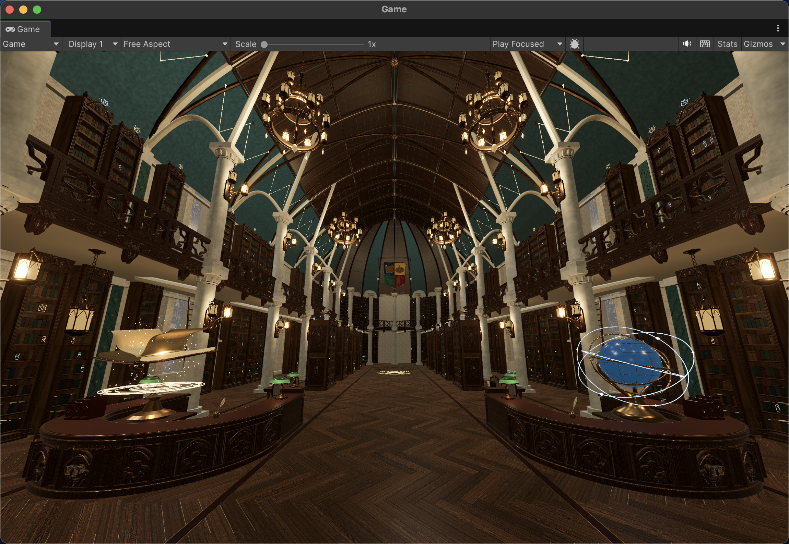
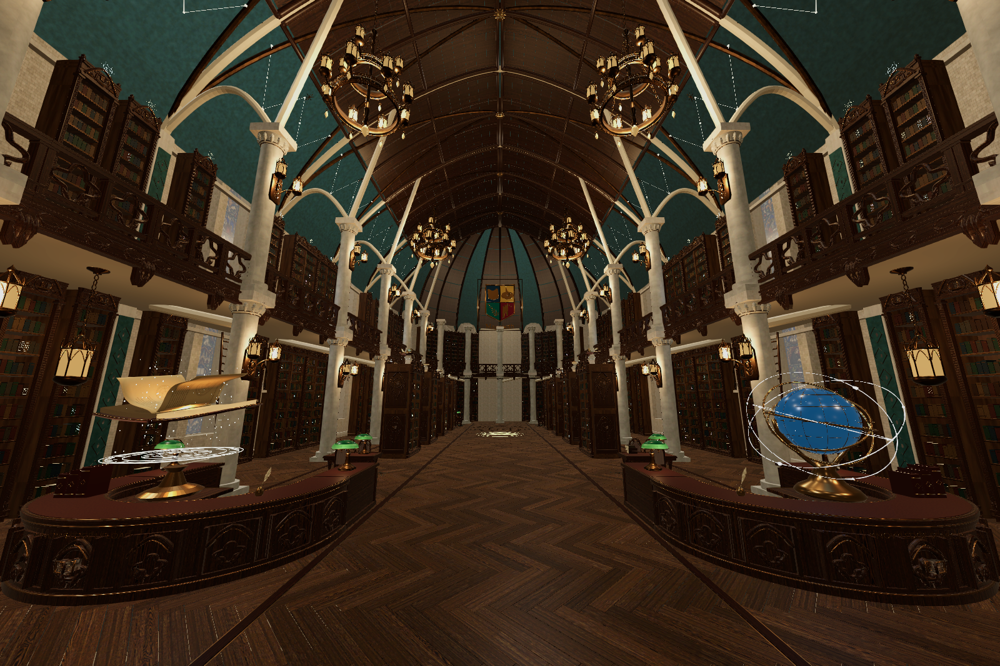
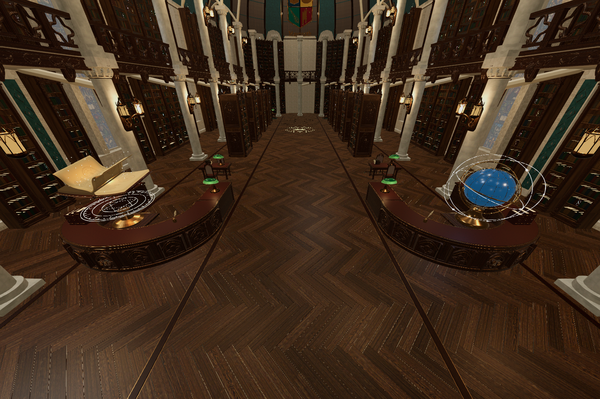
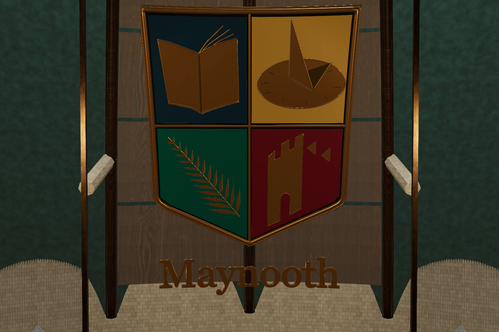
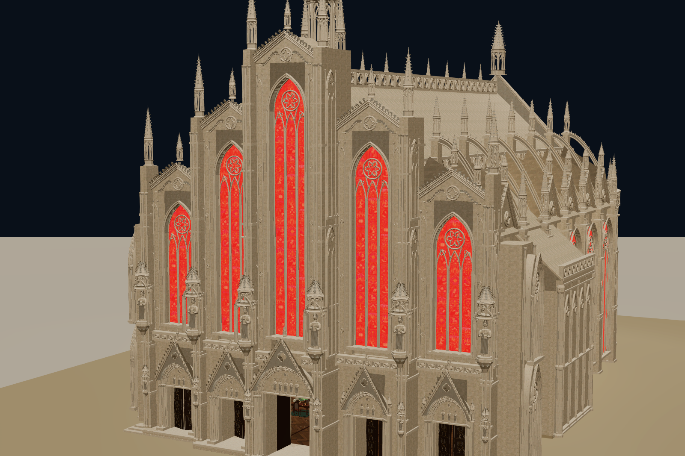

2026-10-03 · 已整理成独立归档工程；原工作工程和本归档工程均完成 Unity 导入验证。下列图片全部来自 Unity；没有使用概念图替代实景。
1.0.3 版本目录。| Unity 编辑器 | 6000.3.25f1 / Metal |
| 项目 | 1.0.3 · 新版图书馆建模 |
| 场景 | Assets/Scenes/MilanLibrary_Magic_V6.unity |
| 完整可见源构件 | 21439 |
| Unity 网格渲染对象 | 889 |
| 三角面 | 15770344 |
| PBR 材质 | 67 |
| 贴图文件 | 49 |
| 变换动画对象 | 47 |
| 实时灯光 | 97 |
| 碰撞体（含角色） | 335 |
| 缺失模型 / 材质 / 脚本 | 0 / 0 / 0 |
| 不支持的 Shader | 0 |
| Play 模式 | 原工作工程已实测：动画运行、角色落地、发光开关保留；归档工程独立复核见下文 |
| 重新打开场景 | 已从磁盘重开并验证 |
结构验证 JSON · Play 模式实测 · 完整来源与 ID 清单 · 原渲染管线记录
完整哥特式外壳、室内书架与藏书、木作地板和拱顶、扩大后的上传与检索区、悬浮魔法书、天球和书架特效，以及最新的 Maynooth 金边文字与校标。白色校标背板不在导入清单中。隐藏模块母版、槽位定位空物体和旧版隐藏视觉件不作为可见几何导入。
静态对象按区域和材质合并，原始 asset_id、instance_id、zone_id、floor 等标识保存于来源清单。动画对象单独保留。Blender Z 向上转换为 Unity Y 向上，长度单位为米。
Unity 6000.3.25f1 首次导入与编译完成；1,025 项场景依赖无缺失，889 个网格渲染对象和 47 组动画通过检查。保留远端 1.0.2 的蹲下控制器与输入配置。查看归档工程验证 JSON。
新增场景和资源位于 Assets/Art/MilanLibraryV6；使用 .mlmesh 自定义导入器生成 Unity 原生 Mesh，非丢失材质的自动 .blend 导入。保留原 Blender 文件和原项目场景。项目 Graphics/当前 Quality 改用专用 MilanV6_URP 管线，原引用保存在 previous_pipeline.json。尝试安装的 Pipeline 包因登录校验失败已撤回，未遗留该依赖。
新增 C# 文件（另含 Editor/MilanArchiveValidation.cs，用于独立归档复核）：
重导出脚本：Tools/MilanV6/export_scene.py。脚本编译完成后检查了 Console / Editor 日志，并完成场景引用检查、Play 模式检查和磁盘重开检查。




